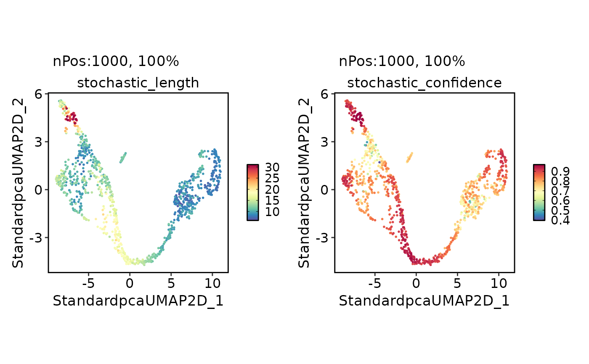
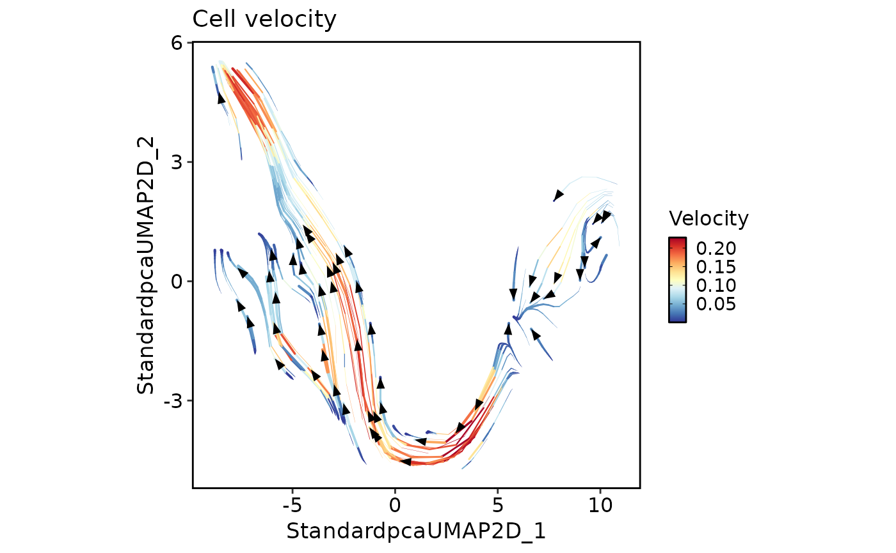
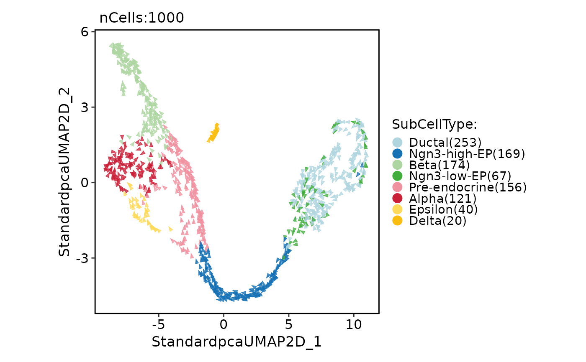

scVelo is a scalable toolkit for RNA velocity analysis in single cells. Runs an enhanced scVelo workflow on a Seurat object with improved error handling, version compatibility, and modular design.
Usage
RunSCVELO(
object = NULL,
adata = NULL,
assay_x = "RNA",
layer_x = "counts",
assay_y = c("spliced", "unspliced"),
layer_y = "counts",
group.by = NULL,
linear_reduction = NULL,
nonlinear_reduction = NULL,
basis = NULL,
mode = "stochastic",
fitting_by = "stochastic",
magic_impute = FALSE,
knn = 5,
t = 2,
min_shared_counts = 30,
n_pcs = 30,
n_neighbors = 30,
filter_genes = TRUE,
min_counts = 3,
min_counts_u = 3,
normalize_per_cell = TRUE,
log_transform = TRUE,
use_raw = FALSE,
diff_kinetics = FALSE,
stream_smooth = NULL,
stream_density = 2,
arrow_length = 5,
arrow_size = 5,
arrow_density = 0.5,
denoise = FALSE,
denoise_topn = 3,
kinetics = FALSE,
kinetics_topn = 100,
calculate_velocity_genes = FALSE,
compute_velocity_confidence = TRUE,
compute_velocity_graph = NULL,
compute_terminal_states = FALSE,
compute_pseudotime = FALSE,
compute_paga = FALSE,
top_n = 6,
cores = NULL,
palette = "Chinese",
palcolor = NULL,
legend.position = "on data",
show_plot = TRUE,
save_plot = FALSE,
plot_format = c("pdf", "png", "svg"),
plot_dpi = 300,
plot_prefix = "scvelo",
dirpath = "./scvelo",
backend = c("python", "cpp"),
max_dense_gib = 8,
return_seurat = !is.null(srt),
verbose = TRUE,
srt = NULL
)Arguments
- object
A Seurat object. If provided,
adatawill be ignored.- adata
An anndata object.
- assay_x
Assay to convert as the main data matrix in the anndata object.
- layer_x
Layer name for assay_x in the Seurat object.
- assay_y
Assays, or extra layers of
assay_x, to convert as layers in the anndata object. Each name is matched against the assays of the object first, then against the layers ofassay_x, which covers velocity matrices such assplicedandunsplicedstored as layers of a Seurat v5RNAassay.- layer_y
Layer names for the assays in
assay_y. It is ignored for names that are matched as layers ofassay_x, where the layer name itself is used.- group.by
Metadata column(s) used to color cells.
- linear_reduction
Linear reduction (
"pca","svd","ica","nmf","mds","glmpca").linear_reduction_dims_use = NULLuses estimated dimensions, else the first 50.- nonlinear_reduction
Nonlinear reduction (
"umap","umap-naive","tsne","dm","phate","pacmap","trimap","largevis","fr").- basis
The basis to use for reduction, e.g.,
"UMAP".- mode
Velocity estimation models to use. Can be
"deterministic","stochastic", or"dynamical". If the corresponding velocity reduction (e.g.stochastic_umap) is not found, falls back to the scVelo convention (e.g.velocity_umap), which is what an object converted from an AnnData (via adata_to_srt) contains.- fitting_by
Method used to fit gene velocities for dynamical modeling.
- magic_impute
Flag indicating whether to perform magic imputation.
- knn
The number of nearest neighbors for
magic.MAGIC.- t
Power to which the diffusion operator is powered for
magic.MAGIC.Minimum number of counts (both unspliced and spliced) required for a gene.
- n_pcs
Number of principal components to use for linear reduction.
- n_neighbors
Number of neighbors to use for constructing the KNN graph.
- filter_genes
Whether to filter genes based on minimum counts.
- min_counts
Minimum counts for gene filtering.
- min_counts_u
Minimum unspliced counts for gene filtering.
- normalize_per_cell
Whether to normalize counts per cell.
- log_transform
Whether to apply log transformation to AnnData
Xin the Python backend. The C++ velocity calculation uses spliced/unspliced layers, matching scVelo, so this does not alter its velocity matrices.- use_raw
Whether to use raw data for dynamical modeling.
- diff_kinetics
Whether to use differential kinetics.
- stream_smooth
Multiplication factor for scale in Gaussian kernel around grid point.
- stream_density
Controls the closeness of streamlines. When density = 2 (default), the domain is divided into a 60x60 grid, whereas density linearly scales this grid. Each cell in the grid can have, at most, one traversing streamline.
- arrow_length
Length of arrows.
- arrow_size
Size of arrows.
- arrow_density
Amount of velocities to show.
- denoise
Boolean flag indicating whether to denoise.
- denoise_topn
Number of genes with highest likelihood selected to infer velocity directions.
- kinetics
Boolean flag indicating whether to estimate RNA kinetics.
- kinetics_topn
Number of genes with highest likelihood selected to infer velocity directions.
- calculate_velocity_genes
Boolean flag indicating whether to calculate velocity genes.
- compute_velocity_confidence
Whether to compute velocity confidence metrics.
- compute_velocity_graph
Whether to compute and store the velocity graph for downstream terminal-state or pseudotime calculations. If
NULL, compute and store the graph only when terminal states or pseudotime are requested. The velocity embedding itself is always graph-projected, matchingscv.tl.velocity_embedding.- compute_terminal_states
Whether to compute terminal states (root and end points). The C++ backend needs the optional
RSpectrapackage for this step and forcompute_pseudotime.- compute_pseudotime
Whether to compute velocity pseudotime.
- compute_paga
Whether to compute PAGA (Partition-based graph abstraction).
- top_n
The number of top features to plot.
- cores
Number of CPU cores.
NULL(the default) uses the process OpenMP team for the C++ kernels and one Python worker.- palette, palcolor
Palette name (thisplot::show_palettes) or custom colors.
- legend.position
Position of legend in plots. Can be
"on data","right margin","bottom right", etc.- show_plot
Whether to show the plot.
- save_plot
Whether to save plots to files.
- plot_format
Format for saved plots:
"png"(default),"pdf", or"svg".- plot_dpi
Resolution (DPI) for saved plots.
- plot_prefix
Prefix for saved plot filenames.
- dirpath
The directory to save the plots.
- backend
Backend used to compute RNA velocity.
"python"keeps the original scVelo workflow."cpp"uses the package C++ implementation for a stochastic velocity embedding that is compatible with VelocityPlot. The C++ backend never switches to Python implicitly.- max_dense_gib
Maximum estimated GiB allowed for the dense expression working matrices used by the C++ path.
- return_seurat
Whether to return a Seurat object instead of an anndata object.
- verbose
Whether to print the message. Default is
TRUE.- srt
Deprecated alias for
object; supply exactly one of the two. It will be removed in scop 1.0.0.
Examples
Restored example output generated on 2026-10-13 from SCOP 53ed7e08f. These historical examples have not been revalidated against the current release. Current usage and arguments are documented above.
data(pancreas_sub)
pancreas_sub <- RunStandardWorkflow(pancreas_sub)
#> ℹ [2026-10-13 17:15:24] Start standard processing workflow...
#> ℹ [2026-10-13 17:15:24] Checking a list of <Seurat>...
#> ! [2026-10-13 17:15:24] Data 1/1 of the `srt_list` is "unknown"
#> ℹ [2026-10-13 17:15:24] Perform `NormalizeData()` with `normalization.method = 'LogNormalize'` on 1/1 of `srt_list`...
#> ℹ [2026-10-13 17:15:24] Perform `FindVariableFeatures()` on 1/1 of `srt_list`...
#> ℹ [2026-10-13 17:15:24] Use the separate HVF from `srt_list`
#> ℹ [2026-10-13 17:15:24] Number of available HVF: 2000
#> ℹ [2026-10-13 17:15:24] Finished check
#> ℹ [2026-10-13 17:15:24] Perform `ScaleData()`
#> ℹ [2026-10-13 17:15:24] Perform pca linear dimension reduction
#> ℹ [2026-10-13 17:15:25] Use stored estimated dimensions 1:23 for Standardpca
#> ℹ [2026-10-13 17:15:25] Perform `Seurat::FindClusters()` with `cluster_algorithm = 'louvain'` and `cluster_resolution = 0.6`
#> ℹ [2026-10-13 17:15:25] Reorder clusters...
#> ℹ [2026-10-13 17:15:25] Skip `log1p()` because `layer = data` is not "counts"
#> ℹ [2026-10-13 17:15:25] Perform umap nonlinear dimension reduction
#> ✔ [2026-10-13 17:15:35] Standard processing workflow completed
pancreas_sub <- RunSCVELO(
pancreas_sub,
assay_x = "RNA",
group.by = "SubCellType",
linear_reduction = "PCA",
nonlinear_reduction = "UMAP",
backend = "cpp",
show_plot = FALSE
)
#> ℹ [2026-10-13 17:15:35] Running scanpy-compatible preprocessing (15998 features -> filter + normalize)...
#> ℹ [2026-10-13 17:15:44] Running scVelo "stochastic" mode with `backend = 'cpp'` (9699 features)
#> ✔ [2026-10-13 17:16:03] scVelo "stochastic" mode completed
#> ✔ [2026-10-13 17:16:03] scVelo cpp backend completed
FeatureDimPlot(
pancreas_sub,
c(
"stochastic_length",
"stochastic_confidence"
)
)

VelocityPlot(
pancreas_sub,
reduction = "UMAP",
plot_type = "stream"
)

CellDimPlot(
pancreas_sub,
group.by = "SubCellType",
reduction = "UMAP",
pt.size = NA,
velocity = "stochastic"
)
